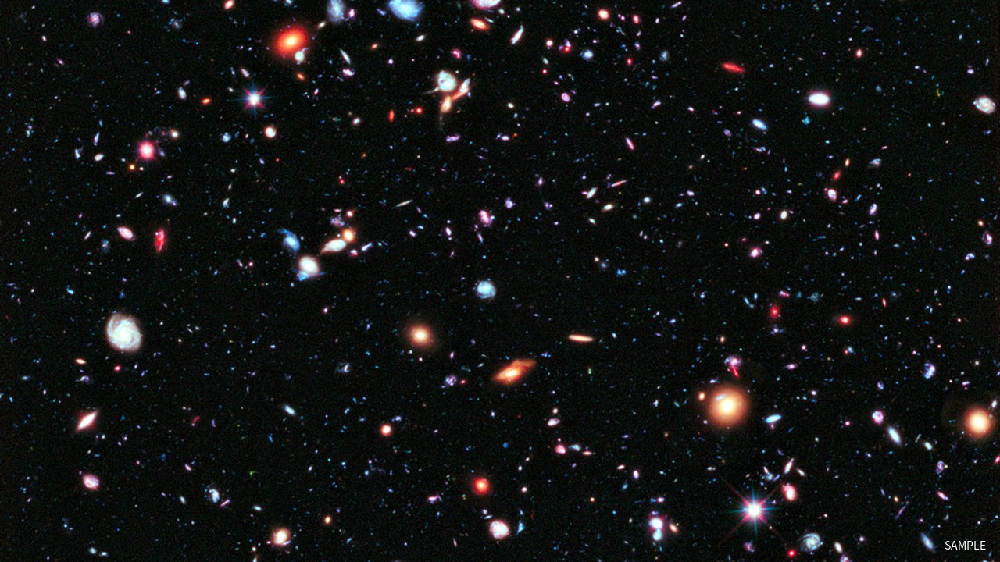
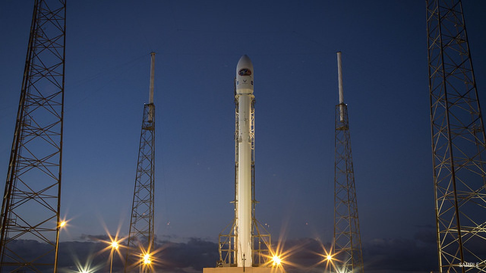
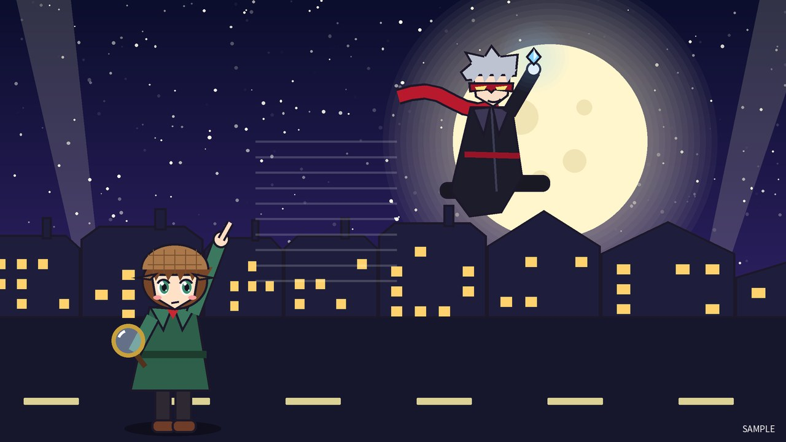
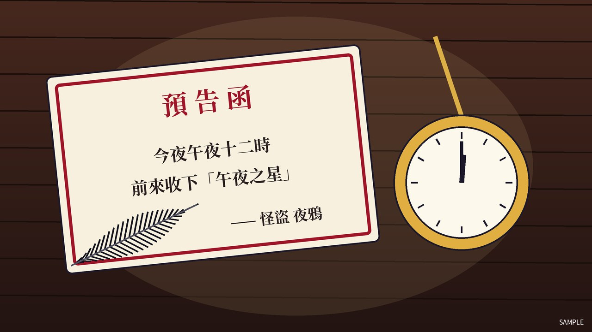

movie_pos 電影素材預覽（示意圖）
所有海報、劇照、預告片都是自動產生的原創示意素材。
1. 星際探險隊
科幻 · 普遍級 · 2026.09.18




2. 午夜偵探
懸疑 · 輔12級 · 2026.09.25




3. 海洋之歌
動畫 · 普遍級 · 2026.09.11


4. 時光咖啡館
愛情 · 保護級 · 2026.11.20（即將上映）


5. 鋼鐵守護者
動作 · 輔15級 · 2026.12.18（is_active=0 已下架）